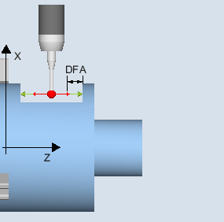
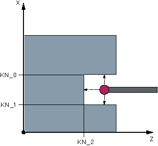
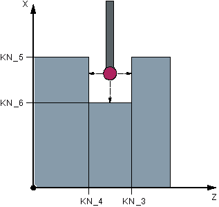

Funktion
Gilt nur auf Drehmaschinen ohne die Technologie Fräsen.
Mit dieser Messvariante kann ein Werkstückmesstaster mit Schneidenlage SL=7 oder SL=8 in einer Referenznut maschinenbezogen in den Achsen der Ebene abgeglichen werden. Mit dem Abgleich kann wahlweise die Messtasterlänge oder der Messtasterkugelradius bestimmt werden.
Bei der Radiusbestimmung ist ein Abgleich in einer Richtung oder in gegenüberliegenden Richtungen einer Achse möglich. Zusätzlich kann beim Abgleich in gegenüberliegenden Richtungen die Lageabweichung (Schieflage) des Messtasters und der wirksame Durchmesser der Messtasterkugel ermittelt werden.
Messprinzip
Die gemessenen Schaltpositionen des Werkstückmesstasters in der parametrierten Achse werden mit den maschinenbezogenen Daten der angewählten Kalibriernut verrechnet und daraus die Triggerpunkte in positiver und negativer Richtung sowie die Lageabweichung in dieser Achse und der effektive Messtasterkugeldurchmesser berechnet. Die Triggerpunkte beziehen sich immer auf die Mitte der Messtasterkugel (TCP).
Der Messtaster verfährt in der gewählten Messachse in beiden Richtungen in der Kalibriernut.
 Abgleich: Taster in Nut (CYCLE973), |  Abgleich: Taster in Nut (CYCLE973), |
Voraussetzungen
Der Werkstückmesstaster muss als Werkzeug mit zugehöriger Werkzeugkorrektur aufgerufen werden.
Die maschinenbezogenen geometrischen Abmessungen der ausgewählten Kalibriernut müssen vor dem Kalibrieren in den entsprechenden allgemeinen Settingdaten hinterlegt sein.
|  Geometrie der Kalibriernut, |  Geometrie der Kalibriernut, |
Kalibriernut | Allgemeines Settingdatum | Beschreibung |
|---|---|---|
KN_0 | SD54621 $SNS_MEA_CAL_EDGE_PLUS_DIR_AX2 | Kalibriernutkante in positiver Richtung der 2. Messachse |
KN_1 | SD54622 $SNS_MEA_CAL_EDGE_MINUS_DIR_AX2 | Kalibriernutkante in negativer Richtung der 2. Messachse |
KN_2 | SD54615 $SNS_MEA_CAL_EDGE_BASE_AX1 | Kalibriernutboden der 1. Messachse |
KN_3 | SD54617 $SNS_MEA_CAL_EDGE_PLUS_DIR_AX1 | Kalibriernutkante in positiver Richtung der 1. Messachse |
KN_4 | SD54618 $SNS_MEA_CAL_EDGE_MINUS_DIR_AX1 | Kalibriernutkante in negativer Richtung der 1. Messachse |
KN_5 | SD54620 $SNS_MEA_CAL_EDGE_UPPER_AX2 | Kalibriernutoberkante der 2. Messachse |
KN_6 | SD54619 $SNS_MEA_CAL_EDGE_BASE_AX2 | Kalibriernutboden der 2. Messachse |
Ausgangsposition vor dem Messen
Der Startpunkt ist so zu wählen, dass der angewählte Werkstückmesstaster auf kürzestem Weg mit achsparallelen Bewegungen kollisionsfrei in die ausgewählte Referenznut entsprechend der aktiven Schneidenlage positioniert werden kann.
Position nach Messzyklus-Ende
Nach Beendigung des Kalibriervorgangs mit einer Abgleichrichtung steht der Messtaster um den Messweg (DFA) gegenüber der Kalibrierfläche. Beim Kalibrieren mit 2 Abgleichrichtungen ist die Position des Messtasters nach Ende des Messvorgangs die Startposition.